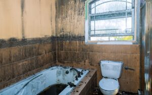

La condensación constante en sus ventanas es una razón principal para el molde del alféizar de la ventana. Se convierte fácilmente en un problema tenaz que tiene el potencial de desesperar incluso al propietario más compuesto. Sin embargo, a pesar de que la solución lleva mucho tiempo, es altamente efectiva. Aquí está el cómo hacerlo: Las cosas básicas que necesita para limpiar el molde de los alféizares son:- Guantes
- Blanqueador
- Trapo
- Cepillo
- Lona plástica
- Bolsa de basura
- Gafas de protección
- Máscara contra el polvo
- Papel de lija
- Pintar
- Cepillo de pintura
- Vinagre y solución de amoníaco;
- Solución de vinagre y bicarbonato de sodio: a pesar de que no es efectiva después de varios minutos, su reacción inicial es lo suficientemente fuerte como para manejar el moho suave;
- Jabón lavavajillas;
Cómo limpiar el alféizar de la ventana
- Equipe su kit de seguridad : primero, asegúrese de no quemarse accidentalmente con los detergentes ácidos. Póngase guantes de goma para proteger sus manos. Si prefiere tener mucho cuidado, un par de gafas de vidrio de la tienda de conveniencia hará el trabajo. Nunca se sabe cuánto moho se ha acumulado y cuánto tiempo tendrá que fregarlo.
- Haga una prueba segura del área de limpieza : para evitar salpicaduras por todo el lugar, coloque una lona plástica o una bolsa de basura grande debajo de la ventana que va a limpiar. La lona es más ventajosa, ya que puede colocarse estacionaria en el suelo, pero si no la tiene, también puede usar una bolsa de basura.
- Deje entrar el aire : antes de tapar la suciedad, abra las ventanas y ventile el lugar. De esta manera, algunas de las esporas de moho caerán afuera. Déjalo abierto para toda la limpieza y algo más: de esta forma los gases de los detergentes también desaparecerán.
- Mezcle su solución de limpieza y comience a fregar : el blanqueador puro será demasiado fuerte, incluso si las manchas del molde han sido bastante persistentes. Por lo tanto, disuelva una parte del cloro en tres partes de agua tibia. Sumerja el pincel en la solución y frote el molde. Luego, limpie las partículas raspadas con el trapo.
- Seque y limpie : tómese un tiempo para que el alféizar de la ventana se seque y luego frote el molde que aún cuelga allí. Use el trapo, mojado en agua limpia. Antes de cerrar la ventana, asegúrese de dejar el alféizar para secarse por completo.
- Lije el alféizar de la ventana : si está hecho de madera, debe usar un papel de lija para raspar el último molde negro restante. Retire el serrín con su aspiradora. Tomará más tiempo si la madera ha sido pintada de antemano: deberá cebarla y volver a pintarla para limpiar completamente su aspecto inicial.
- Deseche el equipo de seguridad : retire la lona de plástico, dóblela para que no se caiga y tírela en una bolsa de basura.